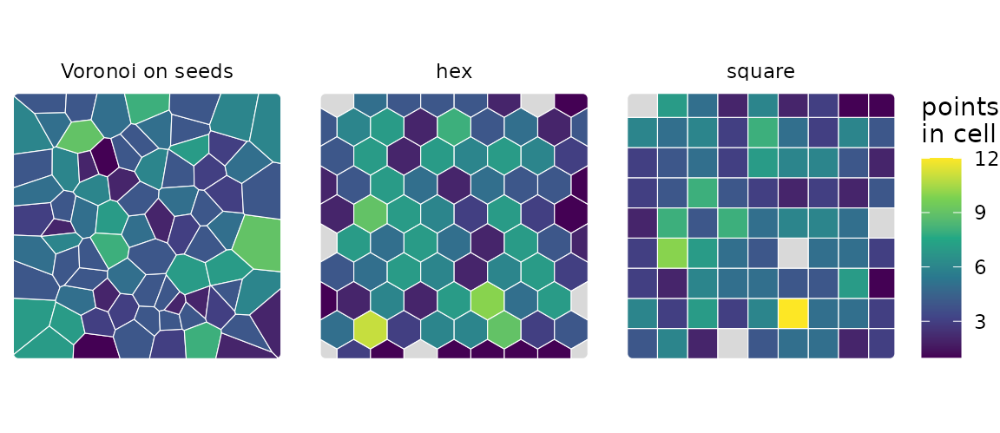
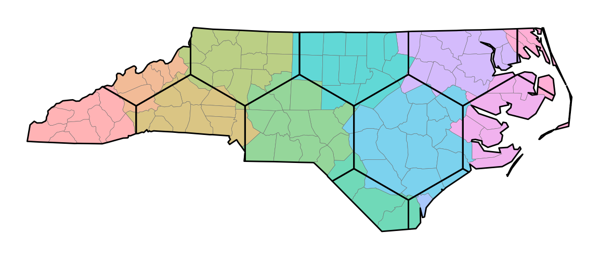

This article takes a layer of observations to cells. It chooses a
tessellation method, places the seeds of Voronoi cells, puts each
observation in a cell, and reads what summarize_by_cell()
returns (the standard error that fits the question, and the warnings
about pooled values). It also
checks the cell mean against block kriging with
kriging_adequacy(). vignette("resolution")
explains how to set the number of cells, and
vignette("glossary") defines the terms used here.
This article needs two optional packages: gstat for
the variograms behind the design effect and the kriging check, and
ggplot2 for the maps. Where one is missing, the code that
needs it is shown but not run.
A simulated layer and its cell count
The layer is 350 points on a square 1,000 m on a side. The response
z is 1.5 times a predictor a, plus a smooth
spatial field and some noise; b is noise alone.
library(sf)
library(spatialkit)
set.seed(11)
n <- 350
xy <- data.frame(x = 5e5 + runif(n, 0, 1000), y = 5e6 + runif(n, 0, 1000))
D <- as.matrix(dist(xy))
field <- as.numeric(t(chol(exp(-D / 70) + diag(1e-8, n))) %*% rnorm(n))
xy$a <- rnorm(n)
xy$b <- rnorm(n)
xy$z <- 1.5 * xy$a + field + rnorm(n, sd = 0.3)
pts <- st_as_sf(xy, coords = c("x", "y"), crs = 32632)
prof <- resolution_profile(pts, "z")
size <- select_resolution(prof)
size$best## [1] 78resolution_profile() and
select_resolution(), at their defaults, size the cells for
pooled values at 4.5 observations per cell, which gives 78 cells for 350
points. vignette("resolution") explains the size and the
other ways to set the count.
Choosing a tessellation method
build_tessellation() draws four kinds of cell.
-
"voronoi"gives one cell per point it is given, each the part of the area nearer that point than any other. On the observations themselves that is one cell per observation, with no spread inside a cell to give a standard error. On seeds placed byget_voronoi_seeds()you set the count, and the cells follow the observations: small where they are dense, large where they are sparse. -
"hex"and"square"lay a grid of equal-area cells, clipped at the boundary, so you set the cell size and the data do not. Hexagons put all six neighbours of a cell at the same distance; squares line up with the axes of the CRS. A grid laid over the whole area can leave cells with no observation, more of them the more the points cluster. -
"triangles"returns the Delaunay triangulation of the points. It is for interpolation and work on adjacency, and is not meant as a cell to summarise in.
"hex" and "square" need a
boundary to lay the grid over.
clip_target_for() returns one polygon to tessellate within:
the bounding box of the points, widened by expand (a
fraction of its longer side below 1, a distance in CRS units otherwise).
Passing the same polygon to every method makes the tessellations cover
the same ground.
bnd <- clip_target_for(pts, expand = 0.02, quiet = TRUE)
seeds <- get_voronoi_seeds(n = size, sample_points = pts)
vor <- build_tessellation(seeds, boundary = bnd, method = "voronoi",
quiet = TRUE)
hex <- build_tessellation(pts, boundary = bnd, method = "hex",
approx_n_cells = size, quiet = TRUE)
sq <- build_tessellation(pts, boundary = bnd, method = "square",
approx_n_cells = size, quiet = TRUE)
c(voronoi = nrow(vor$cells), hex = nrow(hex$cells), square = nrow(sq$cells))## voronoi hex square
## 78 85 81
library(ggplot2)
ggplot(three) +
geom_sf(aes(fill = n), colour = "white", linewidth = 0.2) +
facet_wrap(~ method) +
scale_fill_viridis_c(name = "points\nin cell", na.value = "grey85") +
theme_void()
Asked for the same count, the hex grid builds 85 cells, 7 of them
with no observation, and the square grid 81, 4 empty, while the 78
Voronoi cells on k-means seeds have none empty. These points are drawn
uniformly over the square; on clustered points the grids leave more
cells empty. ?build_tessellation gives the rules each
method follows.
Placing Voronoi seeds
get_voronoi_seeds() places the seeds three ways.
method = "kmeans", the default, takes the centres of a
k-means partition of sample_points; "random"
draws seeds uniformly inside boundary;
"provided" takes the seeds you pass.
Given the result of select_resolution() as
n, as above, the k-means method returns the centres of the
partition the profile scored, so the Voronoi cells are the cells the
criteria judged and nothing is drawn at random. Given a number, it runs
a new k-means. Under the default partition = "density" each
point is weighted by its local density, which gives many small cells
where the points are dense and a few large ones where they are sparse.
Its draws come from the session’s random-number stream: call
set.seed() first, or pass set_seed, to get the
same seeds again. For k-means, n is an upper bound, so
check nrow() on the result.
nrow(seeds) # the centres the profile scored## [1] 78
fresh <- get_voronoi_seeds(n = size$best, sample_points = pts, set_seed = 1)
nrow(fresh) # a new density-weighted k-means## [1] 78The seeds carry the hull of sample_points as their
cover, so build_tessellation(seeds) without a boundary
still makes cells that hold every observation. The seeds of
select_resolution() also carry the record of how the count
was set, which the cells and the assigned rows keep (see “Pooled values
and their warnings” below).
Putting each observation in a cell
assign_features_to_polygons() returns the observations,
one row each, with the ID of the cell that holds them.
asg_v <- assign_features_to_polygons(pts, vor$cells, polygon_id_col = "cell_id")
head(asg_v$cell_id)## [1] 19 1 41 1 1 78The 78 cells hold from 1 to 9 points each. A point outside every cell
is dropped, with a warning of class spatialkit_unassigned
that gives the count; keep_unassigned = TRUE keeps it with
NA as its cell. A point on the edge two cells share goes to
one of them by tie_break.
polygon_id_col = "cell_id" keeps the name the cells carry,
so the later calls take id_col = "cell_id".
Grouping a layer of polygons
assign_features_to_polygons() takes polygons as well as
points. With largest = TRUE, the default, each polygon goes
to the cell it overlaps most, so the result has one row per polygon. The
example groups North Carolina’s counties, which ship with
sf, into hexagonal cells laid over the state outline.
nc <- st_read(system.file("shape/nc.shp", package = "sf"), quiet = TRUE)
counties <- ensure_projected(nc[, c("NAME", "BIR74", "SID74")])
state <- st_union(counties)
nc_cells <- build_tessellation(coerce_to_points(counties), boundary = state,
method = "hex", approx_n_cells = 12,
quiet = TRUE)$cells
grouped <- assign_features_to_polygons(counties, nc_cells,
polygon_id_col = "cell_id")
joined <- st_join(counties, nc_cells)
c(counties = nrow(counties), grouped = nrow(grouped), joined = nrow(joined))## counties grouped joined
## 100 100 159The 100 counties come back as 100 rows, spread over all 12 cells,
from 1 to 14 counties each. sf::st_join() on the same
layers returns 159 rows, one for each county and cell that touch or
overlap, so a count per cell taken from it counts a county once in every
cell it reaches.
ggplot() +
geom_sf(data = grouped, aes(fill = cell), colour = "grey40",
linewidth = 0.1) +
geom_sf(data = nc_cells, fill = NA, colour = "black", linewidth = 0.5) +
scale_fill_manual(values = grDevices::hcl.colors(nlevels(grouped$cell),
"Set 3"),
guide = "none") +
theme_void()
What summarize_by_cell() returns
summarize_by_cell() reduces the assigned rows to one row
per cell. Passing cells_sf attaches the cells’ geometry, so
the result maps, and keeps the cells that hold no observation.
vals <- summarize_by_cell(asg_v, "z", id_col = "cell_id", cells_sf = vor$cells)
names(vals)## [1] "cell_id" "n" "resp_mean_z"
## [4] "..sd_resp_z" "..se_resp_z" "cell_weight"
## [7] "..pooled_resp_z" "..pooled_w_resp_z" "..pooled_target_resp_z"
## [10] "geometry"
round(st_drop_geometry(vals)[1:4, -1], 3)## n resp_mean_z ..sd_resp_z ..se_resp_z cell_weight ..pooled_resp_z
## 1 6 -0.269 2.331 0.952 6 -0.075
## 2 7 0.150 1.410 0.533 7 0.586
## 3 4 0.624 1.618 0.809 4 0.083
## 4 3 -2.261 1.597 0.922 3 -0.433
## ..pooled_w_resp_z ..pooled_target_resp_z
## 1 0.458 0.089
## 2 0.496 1.016
## 3 0.360 -0.222
## 4 0.297 0.340The columns, in order:
-
cell_id, andn, the observations in the cell. A cell with none hasn = NA, and stays in the result, so a map shows where there is no data. -
resp_mean_z, the plain mean of the response. Withpredictor_vars, each predictor getspred_mean_<name>and its own columns of the kinds below. -
..sd_resp_zand..se_resp_z, the standard deviation inside the cell and the standard error of its mean. A cell of one observation has a standard error ofNA. -
cell_weight, the cell’s effective sample size: its count of non-missing responses, divided by the design effect whendeffapplies one. Pass it as the weights of a regression on cell values. -
..pooled_resp_z, the pooled value: the cell’s mean pulled toward the mean of the observations in the 8 nearest cells (nearest by the centroid of their observations). That mean is the cell’s target,..pooled_target_resp_z. The cell’s own weight,..pooled_w_resp_z, is the share of the pooled value that is the cell’s own mean, and it grows with the cell’s count.estimate = "mean"leaves these three columns out.
The plain mean and the pooled value both estimate the cell’s true mean: the expected
value of one further observation located in the cell the way its
observations were. Neither is the average of a surface over the cell’s
area. Pooled values are for maps and for predicting observations. For a
regression on cell values use the plain means with
cell_weight; ..pooled_w_resp_z is not a
regression weight.
Other arguments add columns. deff other than 1 adds
deff_applied and deff_method,
area = TRUE adds cell_area and
n_per_area, conf_level adds a confidence
interval for each mean (..ci_lo_*, ..ci_hi_*),
and obs_level adds a range for one further observation in
the cell around the pooled value (..obs_lo_*,
..obs_hi_*). Away from the observations no interval here is
calibrated. vignette("reporting") says which interval
answers which question, and ?summarize_by_cell lists the
columns under “Output columns” and “Value”.
Standard errors and the design effect
The naive standard error of a cell mean, s/\sqrt{n}, treats the points in a cell as independent. As an estimate of the population (grand) mean, a cell mean on an autocorrelated field varies more than that: the points in a cell share the cell’s departure from the population mean, so they carry less information than their count.
The design effect is how many times larger a cell mean’s variance is
than s^2/n says, and n/\text{deff} is the effective sample size. A
design effect estimated from the data ("kish" or
"variogram") also corrects s, which the same correlation biases low, so
the standard error comes out more than \sqrt{\text{deff}} times the naive one;
“Standard errors and design effects” in ?summarize_by_cell
gives the formula. Leave deff = 1 when the cell means
describe the cells, as on a map or in a regression on cell values, and
the points are spread through each cell. Set deff when the
cell means feed a claim about the whole population.
Kish’s design effect, 1 + (n - 1)\rho with \rho the intra-class correlation inside a cell, grows with the count in a cell, so this section uses bigger cells, from a square grid asked for 24.
tess <- build_tessellation(pts, boundary = bnd, method = "square",
approx_n_cells = 24, quiet = TRUE)
asg <- assign_features_to_polygons(pts, tess$cells)
c(cells = nrow(tess$cells), points = nrow(asg),
median_per_cell = median(table(asg$poly_id)))## cells points median_per_cell
## 25 350 14summarize_by_cell() takes the design effect as
deff. Three settings on the same cells:
sac <- estimate_sac_range(pts, "z")
iid <- summarize_by_cell(asg, "z", cells_sf = tess$cells, deff = 1)
kish <- summarize_by_cell(asg, "z", cells_sf = tess$cells, deff = "kish")
vgm <- summarize_by_cell(asg, "z", cells_sf = tess$cells, deff = "variogram",
sac = sac)
data.frame(n = iid$n,
iid = round(iid$..se_resp_z, 3),
kish = round(kish$..se_resp_z, 3),
variogram = round(vgm$..se_resp_z, 3))[1:5, ]## n iid kish variogram
## 1 14 0.546 1.072 1.272
## 2 11 0.447 0.805 0.963
## 3 18 0.381 0.822 0.987
## 4 16 0.592 1.222 1.467
## 5 8 0.527 0.854 0.996Across cells the standard error is a median 1.96 times the naive one
under kish and 2.35 times under variogram. As
an estimate of the population mean, a confidence interval built on the
naive standard error is about 43 percent of the width the variogram
correction gives it on this field. For the cell’s own mean the naive
standard error is the better of the two, and close to right when the
points are spread through the cell; the next section
(kriging_adequacy()) measures how close on this field.
deff = "kish" estimates an intra-class correlation from
the variance within and between cells and applies Kish’s factor.
deff = "variogram" takes the correlation from the fitted
variogram, so it uses the spatial structure and not the cell labels.
When no usable variogram exists, that request falls back to
"kish" with a warning of class
spatialkit_deff_fallback, and the deff_method
column names the correction each row carries. The result records the
correction and the per-cell design effects, and the Kish result the
intra-class correlation it used:
attr(vgm, "deff_applied")$method## [1] "variogram"## Min. 1st Qu. Median Mean 3rd Qu. Max.
## 2.531 3.487 4.120 4.143 4.756 5.416
attr(kish, "icc")$resp## [1] 0.1692353A cell whose design effect reaches its count holds one observation’s
worth of information, so its standard deviation says nothing about the
spread and its standard error is NA. Use bigger cells or
collect more points.
Is the cell mean the best estimate of the cell?
The plain mean weights every point in a cell equally and ignores
everything outside it. Block kriging weights the observations by their
correlation with the cell under a fitted variogram, borrows from
neighbouring cells, and gives a variance from the same model.
kriging_adequacy() computes both for every cell, without
changing any cell value, and scores the variogram by blocked
cross-validation.
ka <- kriging_adequacy(asg, "z", tess$cells, k = 4, seed = 1)
ka## Block-kriging adequacy over 25 cells (350 points, nmax 50)
## variogram: Nug(2.34, 0) + Exp(1.49, 208); sill 3.83, nugget 2.34 (61%), range
## 623.8
## kriging variance / no-data variance of the cell mean (1 = nothing from the
## data): median 0.130, range 0.090-0.217; 0 cell(s) above 0.5
## kr_gain, the share of the plain mean's error variance that kriging removes
## under this variogram (1 - kr_var / plain_var): median 0.44, range 0.23-0.59
## over the 25 cell(s) with points and a kriged estimate
## kriged minus plain mean, over the standard deviation the variogram gives that
## difference (sqrt(plain_var - kr_var)): |shift| > 1 in 7 of 25 cell(s), > 2
## in 0 (about 8 and 1 when the variogram is right)
## naive s^2/n below plain_var (the naive standard error is too small if the
## variogram is right) in 15 of the 25 cell(s) with two or more points; median
## s^2/n over plain_var 0.85
## empty cells: 0 (kriged estimate and variance available for each)
## blocked CV (block_kfold, 4 folds, 350 points): var of standardised error 0.96
## (1 = kriging variance correct; above 1 = understated), mean -0.04, RMSE
## 1.76plain_var is the error variance of the plain mean under
the fitted variogram. A naive se^2 below it says the naive
standard error is too small, if the variogram is right.
kr_gain is the share of that variance kriging removes in
the cell. kr_ratio is the kriging variance as a share of
the variance the cell mean has with no data, so 1 means the data say
nothing about the cell. kr_shift is how far the kriged
estimate moved from the plain mean, over the standard deviation the
variogram gives that difference: about a third of cells beyond 1 and one
in twenty beyond 2 is what a right variogram produces, and more says the
means and the model disagree. The blocked cross-validation at the end
standardises each held-out error by its kriging standard deviation: a
variance of 1 for those standardised errors means the kriging variance
is right, and above 1 means it is too small.
round(as.data.frame(st_drop_geometry(ka))[1:4, c("n", "mean", "se",
"plain_var", "kr_pred",
"kr_var", "kr_ratio",
"kr_gain", "kr_shift")], 3)## n mean se plain_var kr_pred kr_var kr_ratio kr_gain kr_shift
## 1 14 1.102 0.546 0.214 0.948 0.139 0.152 0.352 -0.560
## 2 11 0.380 0.447 0.316 0.521 0.153 0.167 0.516 0.349
## 3 18 1.079 0.381 0.182 0.880 0.118 0.130 0.349 -0.790
## 4 16 1.506 0.592 0.185 1.241 0.108 0.118 0.416 -0.953On this field the naive variance s^2/n is 0.85 of plain_var in
the median cell, so the naive standard error is about 8 percent too
small for the cell’s own mean. Kriging removes a median 44 percent of
the plain mean’s error variance. kr_shift is beyond 1 in 7
of the 25 cells and beyond 2 in 0, against about 8 and 1 for a right
variogram, and the variance of the standardised errors is 0.96.
An empty cell still gets a kriged estimate and variance, and the
empty cells line of the report counts them. This grid of 25
cells over 350 points has none.
Pooled values and their warnings
summarize_by_cell() reports problems with the pooled
values, and with whether the cells match the count chosen for them, as R
warnings with a class. Each is raised once per call and reason and
carries its numbers as fields, so you can catch one by its class and
read it without matching its text; a warning about the pooled columns
also names the columns it applies to.
?"spatialkit-conditions" lists every class the package
raises. The helper below runs a call and returns the classes it
raised:
raised <- function(expr) {
seen <- character(0)
withCallingHandlers(expr, warning = function(w) seen <<- c(seen, class(w)[1]))
seen
}The Voronoi cells above were sized for pooled values at 4.5
observations per cell. select_resolution() keeps a record
of that choice: the count, the rule that set it and the cell value it
was chosen for. The seeds, the cells and the assigned rows carry the
record, and summarize_by_cell() checks each summary against
it. A summary of the value the count was chosen for, on the cells and
rows that were scored, raises nothing:
raised(summarize_by_cell(asg_v, "z", id_col = "cell_id", cells_sf = vor$cells))## character(0)Each warning below is a departure from that.
The count was chosen for the other value
(spatialkit_estimate_mismatch)
This call asks for plain means from cells whose count was set for
pooled values. tryCatch() catches the warning by its class,
and the chunk prints its text and its fields:
w <- tryCatch(
summarize_by_cell(asg_v, "z", id_col = "cell_id", cells_sf = vor$cells,
estimate = "mean"),
spatialkit_estimate_mismatch = function(w) w)
writeLines(strwrap(conditionMessage(w), 76))## summarize_by_cell(): the number of cells (78, set by size) was chosen for
## the pooled value, and this summary reports the plain mean. At this cell
## size plain means of small cells are noisy: pass estimate = "pooled", or
## choose the count for plain means (resolution_profile(estimate = "mean")).## chosen_for reported rule cells
## "pooled" "mean" "size" "78"The summary is returned as asked. Report the value the count was
chosen for, or choose the count for the value you report:
resolution_profile(estimate = "mean") with
select_resolution(criterion = "loo").
Not the cells and rows that were scored
(spatialkit_cells_differ)
The summary fits the response again on what it is given and compares the rows, the cells that hold one and the leave-one-out error with the record. Here twenty rows are dropped after the assignment:
w <- tryCatch(
summarize_by_cell(asg_v[-(1:20), ], "z", id_col = "cell_id",
cells_sf = vor$cells),
spatialkit_cells_differ = function(w) w)
writeLines(strwrap(conditionMessage(w), 76))## summarize_by_cell(): these are not the cells and rows the count was scored
## on (the number of rows differs). The profile scored 350 rows of 'z' in 78
## cells with a leave-one-out error of 2.93436; here 330 rows in 78 cells give
## 2.98637. Rows were dropped or moved between cells: points outside every
## cell, a boundary that clips the cells, a subset of the rows, or another
## layer.
w$what## [1] "n"## n cells loo
## scored 350 78 2.934356
## found 330 78 2.986366what names the first comparison that failed:
"n" for another number of rows with a response,
"cells" for another number of cells that hold one,
"loo" for the same rows in the same number of cells with
another leave-one-out error, which means rows sit in other cells, and
"record" when the assigned layer and cells_sf
carry different records. The usual causes are rows filtered after the
assignment, a boundary that leaves points in no cell, and a layer other
than the one profiled. Points on a boundary between two cells, as on
gridded data, are placed so that a lattice passes the check;
?summarize_by_cell (“Value”) lists the cases where they are
not. The returned values describe the cells as given,
attr(, "count_rule")$check keeps the outcome, and cells you
bring yourself carry no record and are not checked.
No better than one mean (spatialkit_no_structure)
b is noise by construction. This chunk shows the warning
as R prints it:
noise <- summarize_by_cell(asg_v, "b", id_col = "cell_id")## Warning: summarize_by_cell(): the pooled values of 'b' predict a left-out
## observation no better than one mean for all rows (leave-one-out error 1.109
## against 1.075; F test of the cells against one mean, p = 0.45; median own
## weight 0.15), so it shows no spatial structure these cells can use. The values
## are returned. A map of them looks smooth because each is mostly its neighbours'
## mean, not because the response varies smoothly.
as.data.frame(attr(noise, "pooled")$columns$resp_b[
c("loo", "loo_one_cell", "structure_p", "own_weight", "structured")])## loo loo_one_cell structure_p own_weight structured
## 1 1.10873 1.074528 0.4467413 0.1475108 FALSEstructured is TRUE only when one mean for
all rows predicts a left-out row more than 2 percent worse than the
pooled values do (loo_one_cell against loo)
and the F test of the cell means against one mean gives a p-value below
0.05 (structure_p). Otherwise it is FALSE, and
the warning is raised. The values are still returned, and a map of them
looks smooth, because each is mostly the mean of its neighbours. On 200
simulated layers with white noise as the response, the median own weight
was 0.11, and a cell’s pooled value had a correlation of 0.79 with the
mean of the pooled values of its 8 nearest cells, where the plain means
had one of -0.02 (dev/sim-pooled-values.R
in the package’s GitHub repository; ?summarize_by_cell
gives the settings under “How this was checked”).
Values with no pooling
(spatialkit_pool_degenerate)
Its reason says which of three cases it is. A column
that does not vary inside any cell is one of them:
asg_v$flat <- 1
w <- tryCatch(summarize_by_cell(asg_v, "flat", id_col = "cell_id"),
spatialkit_pool_degenerate = function(w) w)
writeLines(strwrap(conditionMessage(w), 76))## summarize_by_cell(): the values of 'flat' do not vary inside any cell, to
## the precision of the values, so every own weight is 1 and the pooled value
## is the plain mean. attr(, "pooled") says which columns are constant.
w$reason## [1] "no spread inside any cell"With "no spread inside any cell" and with
"one cell", every own weight is 1 and the pooled value is
the plain mean. With "no signal between cells", the cell
means differ from their targets by no more than the spread inside the
cells explains: every own weight is 0, and each pooled value is its
target and holds none of the cell’s own observations.
spatialkit_no_structure is the warning that marks a
response without structure: in the simulation it was raised on all 200
white-noise layers, and the reason
"no signal between cells" on 20 of them.
Too few cells for neighbours
(spatialkit_pool_few_cells)
With 2 to 9 cells, the neighbours of a cell are all the other cells, so its target is the mean of every observation outside it. A square grid asked for very few cells shows it:
few <- build_tessellation(pts, boundary = bnd, method = "square",
approx_n_cells = 4, quiet = TRUE)$cells
asg_f <- assign_features_to_polygons(pts, few, quiet = TRUE)
four <- summarize_by_cell(asg_f, "z")## Warning: summarize_by_cell(): 'z' has values in fewer than 10 cells (4), so
## each cell's target is the mean of all the other cells, not of cells near it. A
## cell whose own weight is below its share of the column's rows then gets a
## pooled value on the far side of the overall mean from its plain mean, and two
## cells can change order. The `..pooled_w_*` columns hold the weights; estimate =
## "mean" gives the plain means.
round(as.data.frame(four)[, c("poly_id", "n", "resp_mean_z", "..pooled_resp_z",
"..pooled_w_resp_z", "..pooled_target_resp_z")],
3)## poly_id n resp_mean_z ..pooled_resp_z ..pooled_w_resp_z
## 1 1 88 0.067 0.085 0.887
## 2 2 90 0.892 0.786 0.889
## 3 4 96 -0.183 -0.130 0.895
## 4 5 76 -0.045 -0.007 0.871
## ..pooled_target_resp_z
## 1 0.226
## 2 -0.058
## 3 0.326
## 4 0.250The grid has 6 cells, and the cells numbered 3 and 6, strips at the
edge of the box, hold no point, so the summary has a row for each of the
other 4. The overall mean lies between a cell’s own mean and its target.
A cell whose own weight is below its share of the observations therefore
gets a pooled value on the far side of the overall mean from its plain
mean, and two cells can change order. The ..pooled_w_*
column shows how close each cell is to that, and
estimate = "mean" gives the plain means.
?summarize_by_cell lists these classes and the other
warnings of the pooled values under “Conditions”, with the fields each
carries.
Values at other locations
cell_values_at() gives a location the value of the cell
it lies in, the pooled value when the summary holds one, and its
distance from the nearest observation. dist_ratio is that
distance over the layer’s spacing (the median distance from an
observation to the nearest other), the number to report beside a value
read anywhere but at an observation. Passing the seeds the cells were
built on, each with its cell from vor$index, extends each
Voronoi cell past the clipped edge, so a location outside every cell
takes the cell of its nearest seed. The third location below lies
outside the boundary:
seeds$cell_id <- vor$index
where <- st_as_sf(data.frame(x = 5e5 + c(250, 600, 1300),
y = 5e6 + c(250, 700, 500)),
coords = c("x", "y"), crs = 32632)
at <- cell_values_at(where, vals, asg_v, "z", id_col = "cell_id", seeds = seeds)
at[c("value", "dist_ratio")] <- lapply(at[c("value", "dist_ratio")], round, 2)
at[, c("cell_id", "value", "estimate", "filled", "dist_ratio")]## cell_id value estimate filled dist_ratio
## 1 17 -0.18 pooled FALSE 1.58
## 2 51 0.25 pooled FALSE 0.41
## 3 76 0.01 pooled FALSE 11.41Without seeds, a location outside every cell comes back
with filled = TRUE, and filled_from names the
cell its value was taken from. vignette("reporting") shows
the same call with intervals, and what to report with them.
Next
vignette("spatial-cross-validation") comes next: folds
whose score matches the map you will make.
vignette("reporting") writes the cells to a file others can
join to. The help pages behind this article are
?clip_target_for, ?build_tessellation,
?get_voronoi_seeds,
?assign_features_to_polygons,
?summarize_by_cell, ?estimate_sac_range,
?kriging_adequacy and ?cell_values_at.